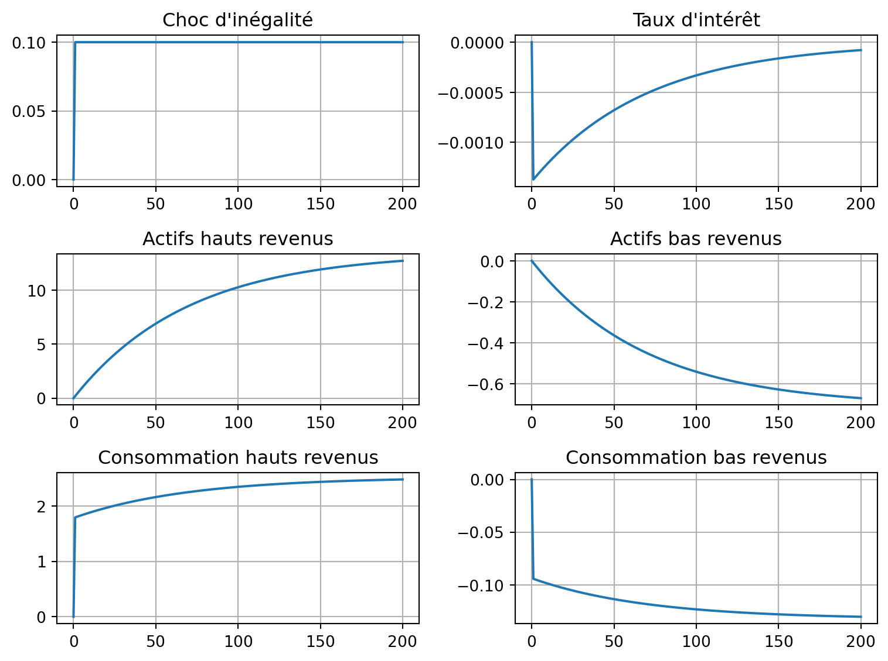

Code
from dyno import dynareCycles et fluctuations - AE2E6
Importer l’émulation Dynare.
from dyno import dynarePour l’instant, nous considérons un agent représentatif unique. Il peut acheter une obligation à deux périodes, qui rapporte 1 après une période. Le prix de l’obligation à la date \(t\) est \(q\), donc son taux d’intérêt (sans risque) est \(r=1/q\).
L’agent valorise la consommation \(c_t\) et la richesse \(b_t q_t\), et il maximise1 :
\[\max \sum_t \beta^t \left( \frac{c_t^{1-\frac{1}{\sigma}}}{1-\frac{1}{\sigma}}+ \varphi \frac{ (1+b_t q_t)^{1-\frac{1}{\eta}} } {1-\frac{1}{\eta}} \right)\]
sous la contrainte budgétaire
\[c_t = y_t + b_{t-1} - b_t q_t\]
où \(y_t\) est un revenu exogène suivant un AR1
\[(y_t-\overline{y})=\rho (y_{t-1}-\overline{y}) + \epsilon^y_t\]
On obtient :
\[q_t = \beta \left(\frac{c_{t+1}}{c_{t}}\right)^{-\frac{1}{\sigma}}+\varphi\frac{ \left(1 + b_t q_t\right)^{-\frac{1}{\eta}}}{\left(c_{t}\right)^{-\frac{1}{\sigma}}}\]
À l’équilibre, la dernière équation devient : \[q = \beta + \varphi \frac{\left(1 + b q\right)^{-\frac{1}{\eta}}}{c^{-\frac{1}{\sigma}}}\]
one_agent.mod. Montrez qu’il existe une racine unitaire. Pouvez-vous l’interpréter ?report = dynare("one_agent.mod")
reportCould not normalize the static model. Variable b is not in the maximum cardinality matching.
Could not normalize the static model. Variable b is not in the maximum cardinality matching.
Could not normalize the static model. Variable b is not in the maximum cardinality matching.
Could not normalize the static model. Variable b is not in the maximum cardinality matching.
Could not normalize the static model. Variable b is not in the maximum cardinality matching.
Could not normalize the static model. Variable b is not in the maximum cardinality matching.
Could not normalize the static model. Variable b is not in the maximum cardinality matching.
Could not normalize the static model. Variable b is not in the maximum cardinality matching.| equations | 3 | |
| variables | 4 | |
| endogenous | 3 | y, c, b |
| exogenous | 1 | e_y |
| constants | 13 | bbar, beta, cbar, chi, eta, phi, q, r, rho, sig_y, sigma, ybar, zbar |
eq 1
0
|
eq 2
0
|
eq 3
0
|
1
0
|
2
0
|
3
1
|
4
1.04
|
5
inf
|
6
inf
|
| y | c | b |
|---|---|---|
| 1.0 | 1.0 | 0.0 |
| y[t-1] | c[t-1] | b[t-1] | e_y[t] | |
|---|---|---|---|---|
| y[t] | 0.0 | 0.0 | 0.000000 | 1.000000 |
| c[t] | 0.0 | 0.0 | 0.038462 | 0.038462 |
| b[t] | 0.0 | 0.0 | 1.000000 | 1.000000 |
| Mean | Std. Dev. | Variance | |
|---|---|---|---|
| VARIABLE | |||
| y | 1.0000 | 0.0100 | 0.0001 |
| c | 1.0000 | 25811.1015 | NaN |
| b | 0.0000 | 671088.6400 | NaN |
| y | c | b | |
|---|---|---|---|
| y | 0.000100 | 0.000004 | 0.0001 |
| c | 0.000004 | NaN | NaN |
| b | 0.000100 | NaN | NaN |
| y | c | b | |
|---|---|---|---|
| y | 0.000100 | 3.846154e-06 | 0.000100 |
| c | 0.000004 | 1.479290e-07 | 0.000004 |
| b | 0.000100 | 3.846154e-06 | 0.000100 |
Le modèle one_agent.mod est un modèle standard d’épargne-consommation sans préférence pour la richesse.
En général, si la solution d’un modèle est \(y_t = A y_{t-1}\), où \(y_t\) est le vecteur des variables, on a une racine unitaire quand l’une des valeurs propres de \(A\) est égale à 1 en valeur absolue.
Dans le cas précis du modfile, on lit directement les valeurs de de A dans la jacobienne. Avec l’ordre du modfile, la matrice est triangulaire supérieure et on voit que la dynamique de la dette est b[t]=1.0 b[t-1] + 0.1 e_y[t], c’est à dire un AR1 avec une persistance parfaite.
Les lignes correspondent aux états (prédéterminés). Les variables non prédéterminées n’apparaissent pas en lignes (ou, de façon équivalente, avec des zéros partout).
Ici, on voit que \(b_t\) est le seul état endogène. On voit aussi que sa dynamique est :
\[b_t = 1.0 b_{t-1} + 0.1 e_{y,t}\]
Autrement dit, la dynamique de \(b\) est un AR1 avec une persistance parfaite.
Ce comportement (comme dans une économie ouverte) vient du fait que tout niveau de dette de long terme est possible (dans un modèle déterministe). Les chocs peuvent donc affecter durablement l’état stationnaire.
Modifier l’équation de revenu :
y = ybar + e_yrho=0.9, puis utiliser : y - ybar = rho*(y(-1) - ybar) + e_y. Dans le cas rho=1.0, noter l’apparition d’une deuxième racine unitaire.Dans les simulations, faire attention à la taille du choc e_y (1% par défaut) afin de la comparer à l’amplitude de la réponse des actifs b.
Dans toutes les simulations, l’effet persistant du choc sur le niveau de dette provient de la présence d’une racine unitaire.
beta en conséquence.Les paramètres phi et eta sont déjà prédéfinis.
Ajouter + phi*(1+b*q)^(-1/eta)/(c^(-1/sigma)) à l’équation d’Euler et beta = 1/r - phi*(1+bbar*q)^(-1/eta)/(cbar^(-1/sigma)); dans la définition des paramètres.
La simulation ne se lance que si la commande check réussit, en particulier quand l’état stationnaire est bien satisfait. Sinon, il faut ajuster les équations/la calibration.
Le résultat est dans le fichier one_agent_2.mod.
Ici, on voit qu’une racine unitaire a disparu, car la préférence pour la richesse épingle les détentions d’actifs d’équilibre.
phi donné, quel est l’effet de eta ?La réponse de l’épargne à un choc transitoire est maintenant de retour vers la moyenne, tandis que la réponse à un choc persistant reste persistante et peut même augmenter au cours du temps.
eta affecte le niveau d’épargne de long terme en réponse à un choc temporaire de revenu. (Par curiosité, vous pouvez vérifier que cela ne dépend pas de phi).
Nous supposons maintenant qu’il existe deux types d’agents : les bas revenus et les hauts revenus. Les hauts revenus représentent une fraction \(\chi\) de la population totale. Ensemble, ils perçoivent une fraction \(z\in[0,1]\) de la production totale \(y\), qui suit un processus AR1 comme dans la première partie. Le reste revient aux bas revenus.
Les hauts revenus peuvent épargner en prêtant aux bas revenus. On note \(B_t\) la quantité totale d’obligations sans risque, échangées au prix \(q_t\). Noter que la dette par tête est \(\frac{B_t}{\chi}\) pour les hauts revenus et \(\frac{B_t}{1-\chi}\) pour les bas revenus. Les hauts revenus ont une préférence pour la richesse comme dans la première partie, tandis que les bas revenus ont des préférences standards (avec \(\varphi=0\)).
two_agents.mod. Quelles sont les variables par tête ?Les contraintes budgétaires sont incluses dans le modfile.
Variables par tête : c_t, c_b, b_t et b_b.
report = dynare("two_agents.mod")Avec une hausse du revenu des hauts revenus, ces derniers souhaitent augmenter leurs détentions d’actifs. Cela se produit car les bas revenus sont indifférents à l’état stationnaire. Pendant la transition, on observe toutefois une baisse du taux d’intérêt (pour convaincre les emprunteurs d’accepter une trajectoire de consommation décroissante).
Le modèle dans le modfile est pré-calibré pour reproduire les données américaines de 1983. On suppose que le modèle est à l’équilibre pour un niveau initial de dette \(B=0.91\) (ratio dette/PIB aux États-Unis en 1983).
En prenant \(\varphi=0.05\) comme constante, pour tout choix donné de \(\eta\), il existe une valeur unique de \(\beta\) compatible avec l’équilibre, comme dans le cas à un agent.
Nous voulons maintenant calibrer la valeur de \(\eta\) pour reproduire la propension marginale à épargner des hauts revenus, qui était d’environ 50% en 1983.
Comme le modèle à deux agents est déjà calibré pour la plupart des variables, on le réutilise plutôt que d’adapter le modèle à un agent.
two_agents.mod, remplacez l’équation d’Euler du bas revenu par q = 1/rbar. Justifiez pourquoi, du point de vue des hauts revenus, le modèle est alors équivalent à un modèle à un agent.Le taux d’intérêt est la seule manifestation des préférences des bas revenus dans le modèle. Si on le fixe à une constante, les hauts revenus font face à une demande d’obligations infiniment élastique, comme dans le cas à un agent.
eta pour que cette p.m.e. soit approximativement de 50%.Plusieurs options sont possibles. On peut simplement appliquer un choc persistant de taille sig_z au revenu global \(y\) et calculer la propension marginale à épargner à différentes périodes (variable mps). Elle doit être normalisée par le niveau initial de revenu des hauts revenus. On peut ensuite faire des calculs pour différentes valeurs de \(eta\) jusqu’à trouver la valeur souhaitée.
Le modèle modifié est two_agents_mps.mod. J’ai trouvé que eta=0.6 est une bonne calibration. Noter que dans ce modèle modifié, le taux d’intérêt est fixé, de sorte que les deux agents sont essentiellement découplés et que le modèle est équivalent à un modèle à un agent pour les hauts revenus.
report = dynare("two_agents_mps.mod")
report.simulation['e_y'][['mps']][:7]| mps | |
|---|---|
| 0 | 0.000000 |
| 1 | 0.121383 |
| 2 | 0.228505 |
| 3 | 0.322829 |
| 4 | 0.405671 |
| 5 | 0.478216 |
| 6 | 0.541528 |
from matplotlib import pyplot as plt
# charger le modèle original à deux agents
report = dynare("two_agents.mod")
df = report.simulation['e_z']
fig, axs = plt.subplots(3, 2, figsize=(8, 6))
axs[0, 0].plot(df['z'])
axs[0, 0].set_title('Choc d\'inégalité')
axs[0, 0].grid(True)
axs[0, 1].plot(df['r'])
axs[0, 1].set_title('Taux d\'intérêt')
axs[0, 1].grid(True)
axs[1, 0].plot(df['b_t'], label='Actifs hauts revenus')
axs[1, 0].set_title('Actifs hauts revenus')
axs[1, 0].grid(True)
axs[1, 1].plot(df['b_b'], label='Actifs bas revenus')
axs[1, 1].set_title('Actifs bas revenus')
axs[1, 1].grid(True)
axs[2, 1].plot(df['c_b'])
axs[2, 1].set_title('Consommation bas revenus')
axs[2, 1].grid(True)
axs[2,0].plot(df['c_t'])
axs[2,0].set_title('Consommation hauts revenus')
axs[2,0].grid(True)
plt.tight_layout()
plt.show()
Une hausse permanente de 10% des inégalités (part de revenu plus élevée pour les hauts revenus) engendre une réallocation de richesse importante et persistante.
Sur 30 ans :
b_t augmente fortement).b_b devient plus négatif).À long terme :
c_t plus élevée, c_b plus faible.il s’agit de la spécification de “préférence pour la richesse”↩︎